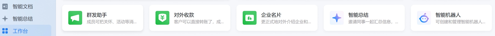
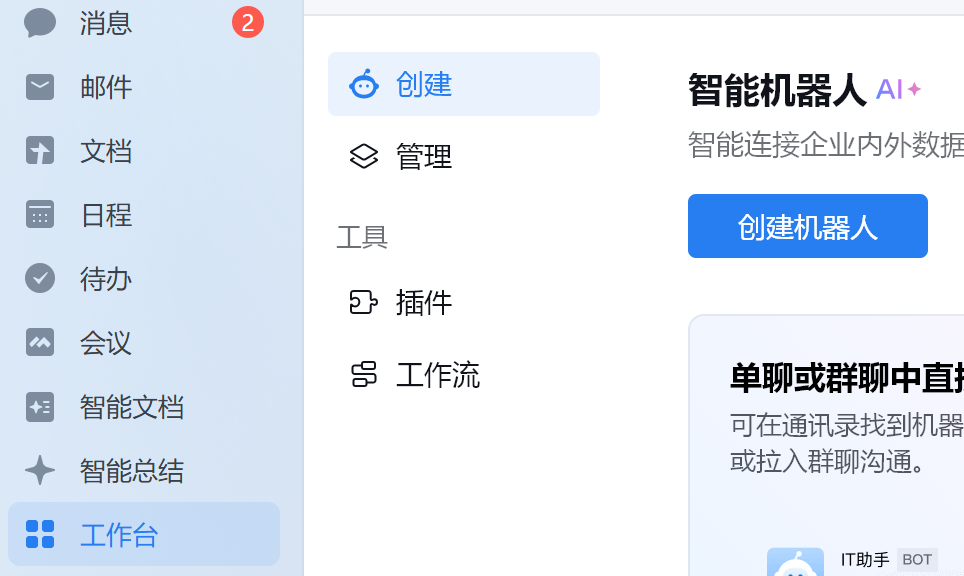
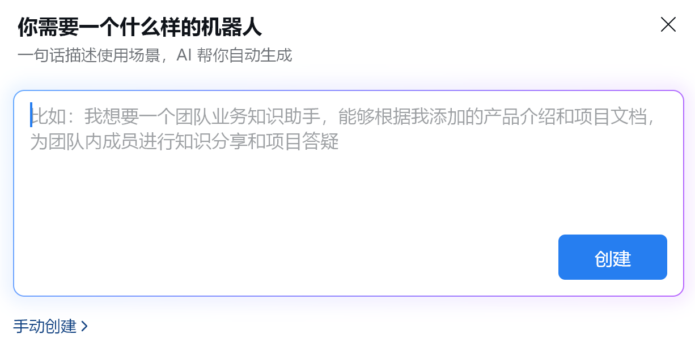
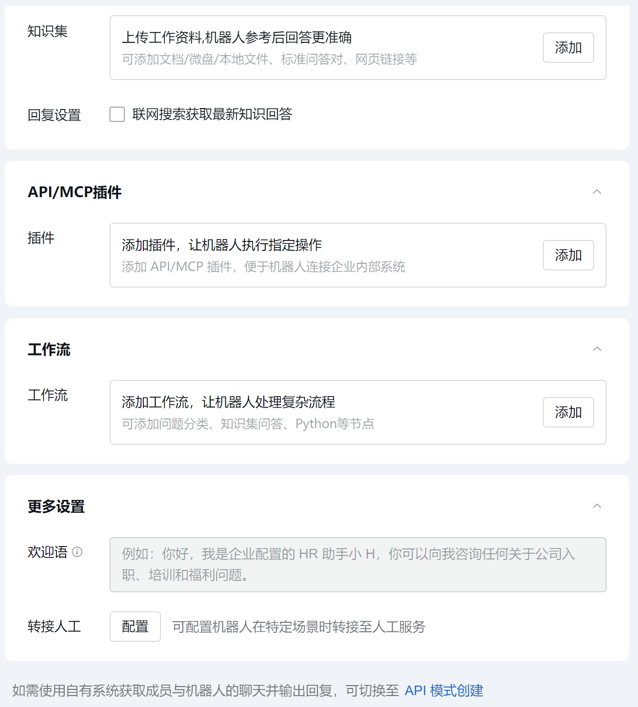
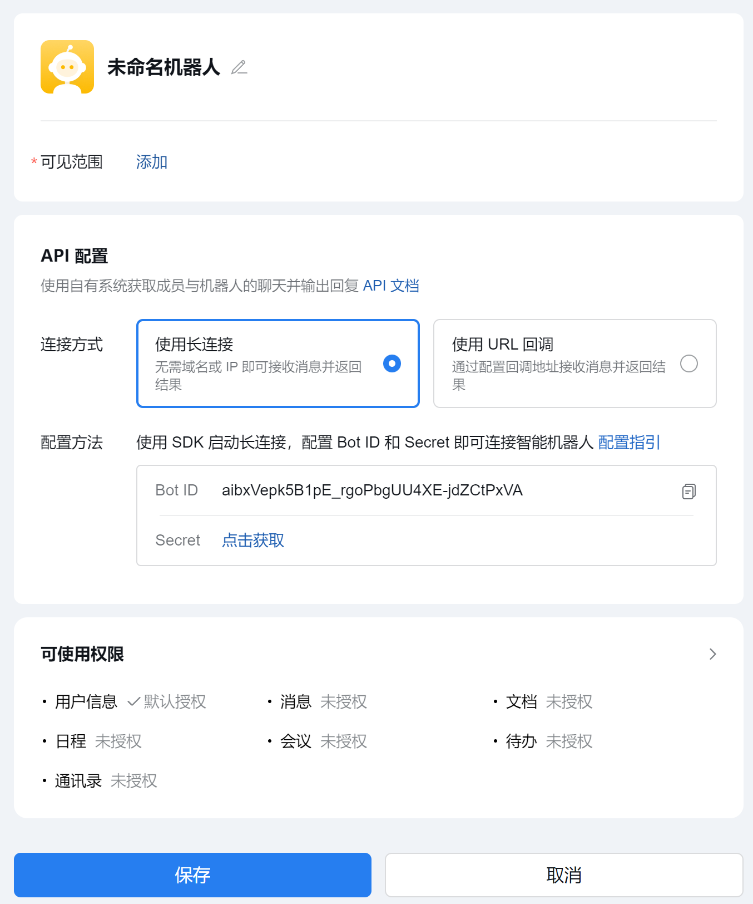

1
创建主桥接智能机器人
从企业微信桌面端或者 Web 端登录后，先进入工作台，找到“智能机器人”入口。申请入口：企业微信管理后台

先进入工作台，再找到“智能机器人”入口。
进入智能机器人页面后，点击“创建机器人”。

在“创建”页点击“创建机器人”。
在弹出的创建窗口中，先选择“手动创建”。

先走手动创建，不直接用 AI 自动生成。
进入手动创建页后，在页面下方点击“API 模式创建”。

切换到 API 模式后，才能按 Bot ID / Secret 的方式接入。
最后完成主桥接机器人的关键配置：
- 给机器人改名
- 修改可见范围
- 连接方式选择“长连接”
- 点击获取
Secret，记录Bot ID和Secret - 最后保存，注意不要修改可使用权限

主桥接机器人要使用“长连接”，并记录好
Bot ID 和 Secret。